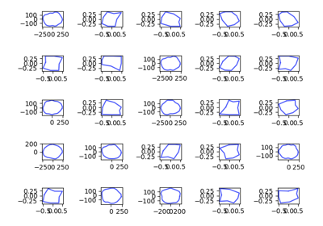
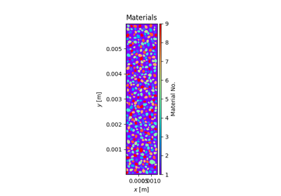

PySALESetup Examples
Examples demonstrating how PySALESetup can be used in full scripts.

Grain Library Demo
Pore Creation Demo


Regolith Sample Demo
Object Hierarchy Demo
Extension Zone Demo
Examples demonstrating how PySALESetup can be used in full scripts.